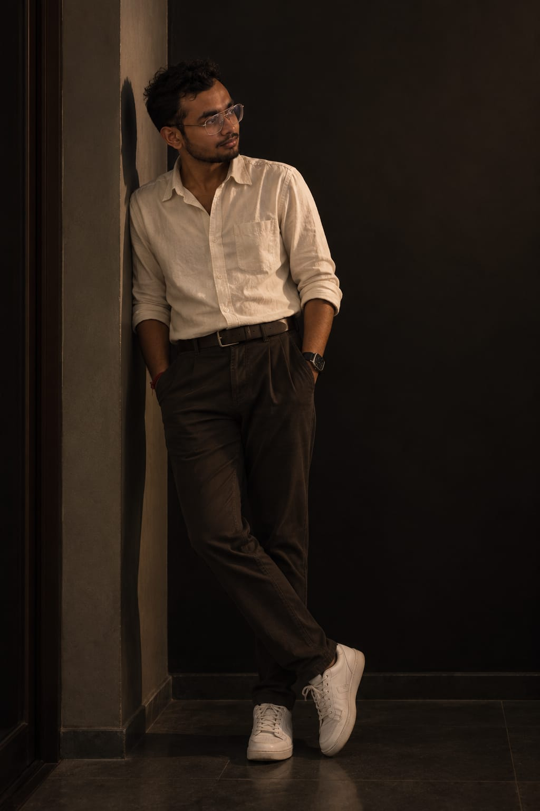

About Me.
A little more than a résumé — the interests, work and curiosities that make up the person behind the portfolio.

I am a Computer Science engineer who found myself becoming equally interested in what happens outside the code editor — how people learn, how ideas are communicated, how games are played, and how stories are told.
My professional life currently sits at the intersection of technology and education. I teach computer science, work with robotics and coach chess, while continuing to build software and explore new technical ideas.
Outside work, I collect books, experiment with audio storytelling, play chess, explore new tools and generally have a habit of following interesting questions much further than necessary.
Python, Java, JavaScript, MERN, PHP, databases and AI/ML projects.
Computer science, robotics, practical learning and academic coordination.
Competitive player, coach and school tournament mentor.
Narration, voice acting and Bengali audio adaptations.
One curious mind.
Many ways to use it.
Engineering gives me a way to build, teaching gives me a way to share, chess gives me a way to think, and stories give me a way to create.
MIND
Teaching, coaching,
building my next ideas.
Computer science classes, robotics, chess tournaments, software projects, exam preparation, books and a growing list of things I want to make.